This document describes the new form-based editor for
aird files introduced in version 5.0. This editor is associated to
*.aird files (which contains Sirius representations data) and provides end-users complete overview of their models and representations, and direct access to the most common operations.
This document assumes you are already faimiliar with the vocabulary associated with Sirius; if that is not the case, please refer to the Modeling Project documentation which describes in details the more “traditional” Sirius UI and the associated concepts.
Note: This new editor has been introduced with Sirius 5.0. While it is already functional, it should be considered as a first iteration, and its UI is subject to change without warnings in later versions based on experience and user feedback.
The traditional Sirius UI is centered on the Modeling perspective, and in particular on the Model Explorer view. For some use cases, especially when Sirius representations are not the primary focus of the user but only a secondary feature to support their main task, this reliance on a specific perspective or view can be inconvenient. The Aird editor is designed to provide an alternative UI to interact with Sirius that is better suited for these use cases. Because the editor is available from any perspective and directly exposes the most common user operations inside its UI, it makes it more convenient to use Sirius in a variety of contexts.
Note that most of the features available from the aird editor are also available from the Model Explorer's UI; the editor simply provides alternative ways to use them that can be more convenient in some contexts. There are two exceptions, described in more details below, which are currently specific to the Aird editor: the generic model creation wizard and the ability to add/remove elements directly from the semantic models.
Using Sirius to display and manipulate your domain models requires telling Sirius:
Representation types are defined in plug-ins which extend Sirius and that you need to install in your environment. Which ones will be available to you depend on what concrete modelers you have installed. Sirius-based modelers can provide many alternative representation types for the same semantic models, and organize them in viewpoints, which corresponds to the different activities or point of views that can be applied to the models.
This organization is reflected in the editor, which presents two main blocks:
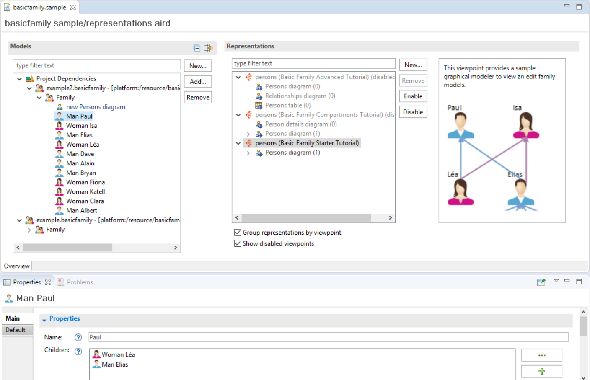
On the left, the Models block shows the raw semantic models, which can come from multiple files (resources), and allows you to configure which models should be loaded, to navigate inside them, to perform some basic editing tasks, and finally to create and manage Sirius representations on them.
On the right the
Representations block displays all the types of representations available and all the concrete ones already created, organized by viewpoint (by default). It also allows you to manage the representations and viewpoints. The representation types available to you will depend both on the kind of models you have loaded and which modeler plug-ins you have installed in your environment. For example if you have installed
UML Designer
and have at least one
*.uml model loaded, you will find there the different kinds of UML diagrams implemented in
UML Designer.
The Aird editor is the default editor associated to the
*.aird files in Eclipse. In some perspectives (e.g.
Java), double-clicking on an
aird file will open the editor and automatically load all the files/models needed if that it not already the case. In other contexts where double-click performs a different operation you may need to open the context menu and select
Open With > Aird Editor.
It is also possible to configure Sirius to automatically open the Aird editor when an
*.aird file is first loaded. When this mode is enabled, opening/expanding a
Modeling Project from the
Model Explorer, which triggers the loading of the models, will also open the editor. This behavior can be enabled via the Sirius preference
Automatically open the aird editor when an aird file is loaded
:
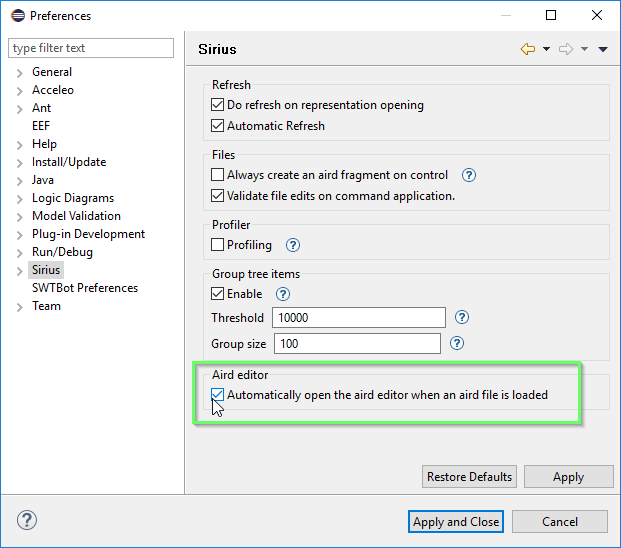
When this preference is activated, then aird editor is opened automatically in the following situations:
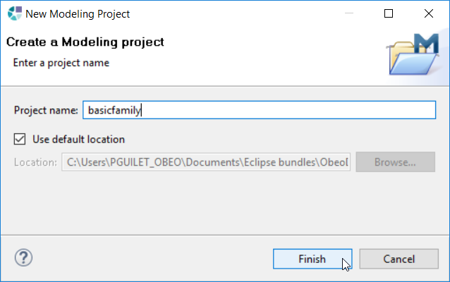
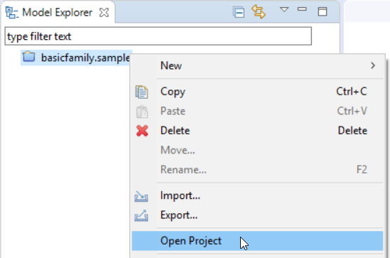
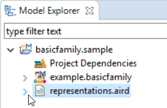
You have four different ways to close the aird editor. But not all the ways have the same behaviour.
There is one thing to take in consideration when it comes to close the aird editor:
The closing mechanism which does not unload models and representations is the following:
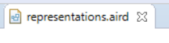
The closing mechanisms which do unload models and representations from memory are the following:
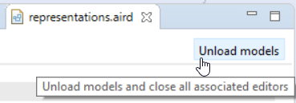
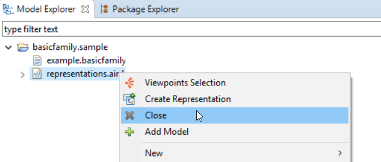
This section describes how to manage the semantic models associated to your aird file, which are visible in the Models block on the left side of the editor:
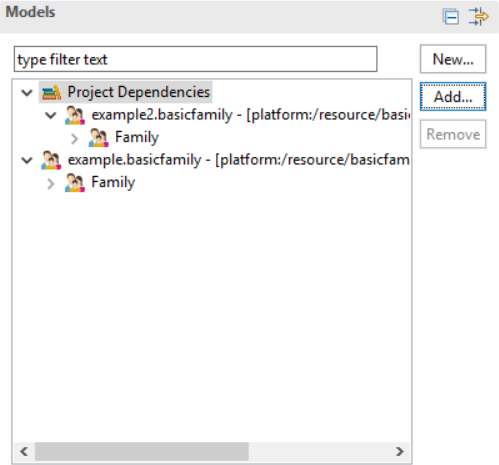
The Models block displays a tree showing all semantic models associated to the aird file, organized in two categories:
For example:
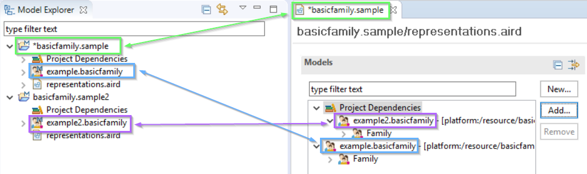
Regardless of the category they appear in, all the semantic models associated with an aird file are fully loaded, and you can expand the tree elements to navigate inside your models. The tree can be filtered on the elements labels using the search box at the top to quickly locate specific model elements:
In addition to the actual semantic elements, this view also includes all existing representations (diagrams, tables, trees). As in the case of the Model Explorer, the representations are available directly below the semantic element they represent, and can be opened by double-clicking on them.
To be able to edit a semantic model with a Sirius modeler, you must first tell the aird it can edit that model. There are two mechanisms to do so:
The aird editor features a generic model creation wizard that can be used to create new models files of any kind supported in the environement (i.e. instances of any installed meta-model). To create a new model, select the New... button. It opens a creation wizard:

aird file and have a generated name.
To remove models dependencies, you must select the root model items and click on the Remove button:
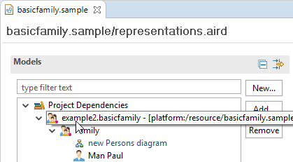
Note that this action does not delete the physical model file.The removal can be applied only if some rules are respected. If they are not, the remove button will still be active and its activation, will inform you of the reasons why you cannot proceed the removal.
The rules regarding models dependencies removal are the following :
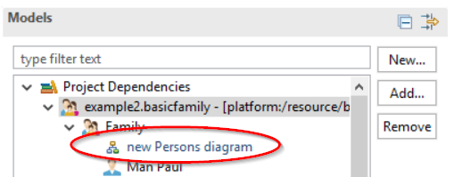
aird file.
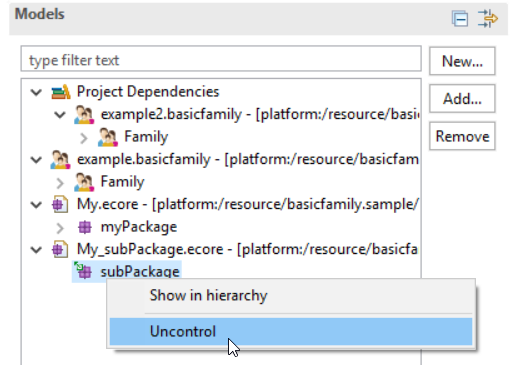
To remove a representation from the aird file, you can either select it in the editor and use the right click contextual action Delete or the DEL keyboard key.
The normal way to display and edit models with Sirius is to do it through one or several Sirius-defined representations ( modelers), which define domain-specific ways to represent and manipulate the data, and ensure some level of consistency.
In some situations you may need to manipulate the model elements more directly, even if no Sirius-based modeler or tool has been defined to support your use case. The aird editor provides support for “quick editing” of the semantic models independently of a Sirius representation. It works like any generic EMF models editor:
Keep in mind that editing the semantic models this way bypasses any high-level restrictions and rules that may be brought by Sirius modelers. Depending on the semantic models, these direct manipulation may break domain constraints. Use with care.
To use a Sirius modeler to edit a model element, you need to create a graphical representation for it. This representation is then editable with a Sirius modeler that can be a diagram, a tree or a table editor. Concrete representations are created from a representation type, which are provided by Sirius-based modelers, and organized by viewpoints.
In addition to providing representation types from which representation can be created, viewpoints can also provide extensions to other viewpoints' representation types, adding for example new tools to them.
The following sections describe how to create/remove representations and the related functionalities.
The aird editor has a block named Representation which displays all the available viewpoints (compatible with the semantic models loaded), the representation types they define, and the actual concrete representations that have been created. All these elements are organized in a tree:
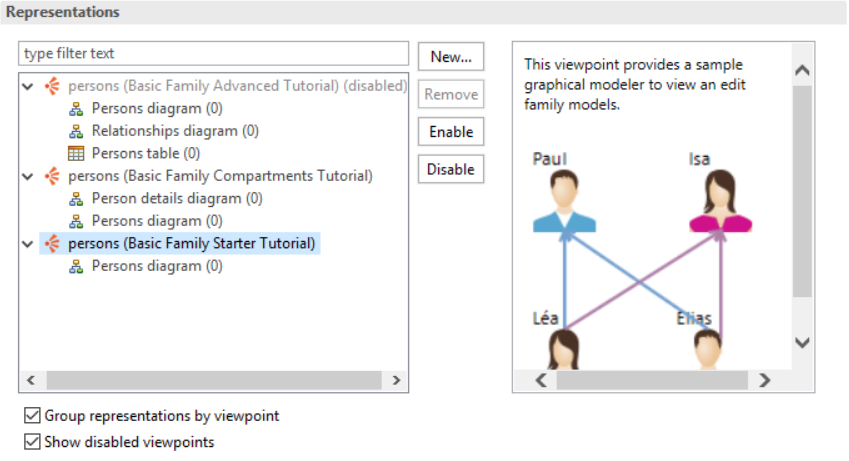
This Representations block is separated in two parts:
To the bottom of these two parts are two checkboxes, that can be used to control which elements are displayed:
A viewpoint is grayed out if it is disabled. Otherwise it is enabled in the aird file.
The viewpoints shown are all the viewpoints available in your environment that are compatible with the models loaded in the aird file. So if your environment does not contain any viewpoint compatible with your models or if you have no models loaded, then the graphical representations component will be empty.
Representations can also be seen directly in the models graphical component of the aird editor under the associated model’s element if the viewpoint containing the representation type used to create the representation is activated. If not the representation will not be visible.
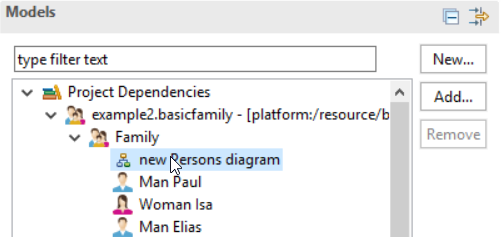
To open an exisiting representation, simply double-click on it (this works both in the Representations tree and in the Semantics tree).
A viewpoint provides representation types and/or extension for other representation types. In some cases you want need to disable functionalities brought by these extensions or on the contrary to enable them.
To enable/disable a viewpoint, you can either:
Some viewpoints have dependencies to another ones. Enabling a viewpoint will automatically enable all its dependencies. Disabling a viewpoint that is a dependency of another one will ask you to confirm its disabling as well as the ones depending on it.
After having identified the representation type providing Sirius modeler functionalities you need, three methods are available to create a new representation from it and a model element to edit its content:
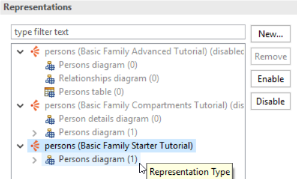
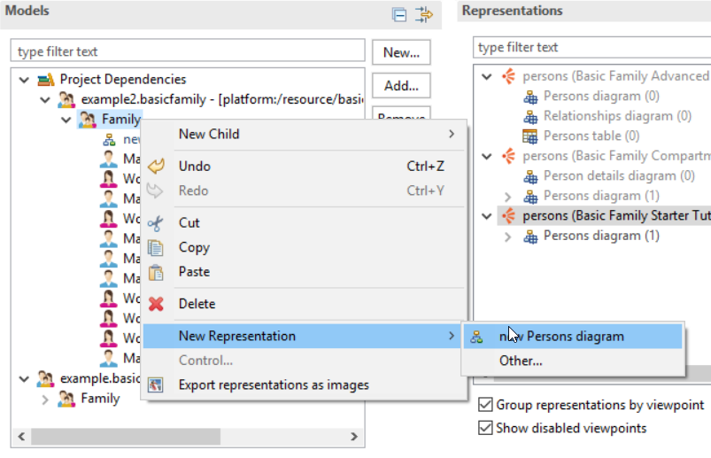
The menu shows only representation types compatible with the selected model element and that belong to activated viewpoints. When choosing Other... the wizard to create new representation is opened and show the representation types compatible with the selected element whether they belong to a viewpoint activated or deactivated. If you create a representation defined in a viewpoint that was previously disabled, it will be enabled automatically.
You can remove a representation either from the representations or models graphical components of the aird editor by:
To open a representation to edit graphically the model’s element it is associated to, you just have to double-click on it either in the models or representations graphical component of the aird editor.
If you double click on a representation in the Representations block that belong to a disabled viewpoint, this viewpoint will automatically be enabled before opening the representation.